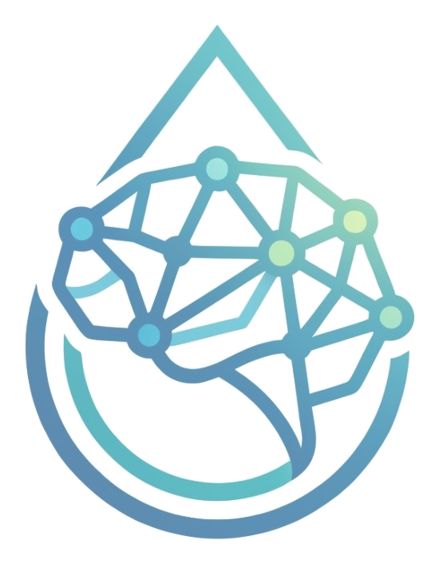

LIVE MONITORINGNow
—L/min
Flow is continuously analyzed to reveal invisible variations.

HydroMindSMART WATER MANAGEMENT SYSTEM Open Dashboard ↗HydroMind monitors water networks, detects abnormal consumption with artificial intelligence, and acts before a small loss becomes a major problem.
Flow is continuously analyzed to reveal invisible variations.
Volume preserved through early alerts.
Automatic emergency closures triggered today.
View Analysis ↗Hidden leaks can waste significant volumes of water. Our platform turns consumption data into immediate, actionable decisions.
Track water flow in real time and identify unusual network behavior.
View Monitoring ↗Consumption analysis, especially at night, helps identify anomalies instantly.
Explore the AI ↗Once a leak is confirmed, the motorized valve can close automatically.
View Controls ↗An intelligent chain that turns every signal into protection.
The sensor records water flow continuously.
The algorithm compares readings with expected behavior.
Abnormal consumption immediately triggers an alert.
The motorized valve closes to minimize water loss.
In a context of growing water stress, protecting water resources is a shared responsibility. HydroMind combines innovation, prevention, and efficiency.